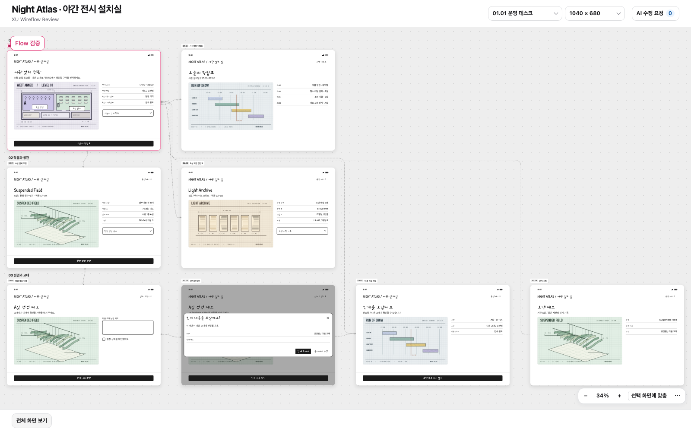

XU Wireflow Review
바이브 코딩으로 앱을 기획하는 디자이너가 화면을 직접 눌러 보며 빠진 동작과 아직 결정할 일을 찾도록 돕는 스킬입니다.

전시 운영 앱 Night Atlas의 전체 흐름입니다. 평면도에서 A실을 골라 도면을 확인하고, 다음 교대에 메모를 보내는 경로를 따라가 보세요. 예제 직접 눌러보기
실제 조작 영상 보기
한국어 자막 파일
흐름을 따라가며 발견한 문제
 메모는 전송되지만 ‘보낸 메모 다시 열기’를 누르면 길이 끊깁니다. 재열람은 기획에 있는 동작이고, 별도 인계 기록 화면을 만들지는 디자이너가 정합니다. AI에 복사하는 수정 요청에도 이 구분이 남습니다.
메모는 전송되지만 ‘보낸 메모 다시 열기’를 누르면 길이 끊깁니다. 재열람은 기획에 있는 동작이고, 별도 인계 기록 화면을 만들지는 디자이너가 정합니다. AI에 복사하는 수정 요청에도 이 구분이 남습니다.
내 프로젝트에 적용하기
프로젝트가 열린 AI 채팅에 전체 배포 키트를 첨부하고 아래 요청을 보내세요.
AI용 적용 안내 · 스킬 ZIP · 예제 기획 · 배포 파일 안내 · 체크섬